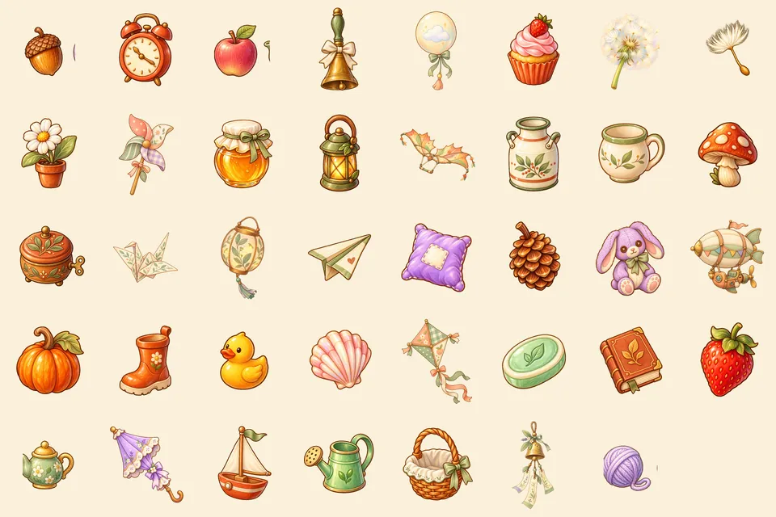

ดูดและยิง
ต่างจาก BlastBlast! ที่อัดและปล่อยถังดับเพลิง Vacuum Shot หยิบไอเทมและยิงด้วยกำลังคงที่ ดังนั้นไอเทมที่คุณเลือกเป็นตัวกำหนดการยิง
ดูดไอเทม ยิงออก บิน
แตะไอเทมเพื่อดึงเข้าถุงเครื่องดูดฝุ่น ยิงออกเพื่อแรงสะท้อน แล้วลงจอดนุ่มเพื่อรักษาโซ่คะแนนให้ต่อเนื่อง เส้นทางสวนไม่มีวันจบ
โปรเจกต์ Unity มีเครื่องดูดฝุ่นหนึ่งตัว ไอเทม 39 ชิ้น เส้นทางไม่สิ้นสุด และแผงอัปเกรด พร้อมการทดสอบอัตโนมัติ เสียงและบิลด์สำหรับอุปกรณ์ยังมาไม่ถึง
แตะไอเทมในทุ่งหรือบนท้องฟ้าเพื่อดึงเข้าถุง ถุงเก็บได้หนึ่งชิ้น และค่าพลังแสดงว่าการยิงจะทำอะไรได้
แตะที่อื่นเพื่อยิงไอเทมด้วยกำลังคงที่ แรงสะท้อนส่งนักบินไปข้างหน้าและขึ้นด้านบน มีหนึ่งวินาทีระหว่างการยิง และการแก้ทิศทางกลางอากาศสองครั้งต่อการบิน
การลงจอดที่มั่นคงจะเติมการยิงอากาศและให้คะแนนตามเกรด การลงจอดที่ควบคุมได้ต่อเนื่องจะเพิ่มโบนัส
ต่างจาก BlastBlast! ที่อัดและปล่อยถังดับเพลิง Vacuum Shot หยิบไอเทมและยิงด้วยกำลังคงที่ ดังนั้นไอเทมที่คุณเลือกเป็นตัวกำหนดการยิง
ไอเทมแก้ทิศทางกลางอากาศ สมดุล ลงจอดนุ่ม พุ่งไปข้างหน้า และยกแนวตั้ง แต่ละชิ้นแสดงระดับ POWER 1/5 ถึง 5/5 สิบชิ้นลอยอยู่กลางอากาศจนกว่าจะถูกเก็บ
การลงจอดต้องสัมผัสอย่างมั่นคงประมาณหนึ่งในสี่วินาที ให้เกรด Perfect, Safe หรือ Rough และการลงจอดที่ควบคุมได้ต่อเนื่องจะสร้างโซ่ได้สูงสุดแปดครั้ง
เนินเขาและหุบเขาที่ลูกคลื่นไม่มีสิ่งกีดขวางประกอบเป็นเส้นทาง และสวนค่อย ๆ จางไปเป็นท้องฟ้าระดับสูงเมื่อคุณบินสูง
สายอัปเกรดสองสาย คือมอเตอร์และถุง อัปเกรดได้ถึงระดับ 4 และจ่ายด้วย Dew ความคืบหน้าบันทึกแยกสำหรับเครื่องดูดฝุ่นแต่ละตัว
กติกาการปล่อย การลงจอด กล้อง และความคืบหน้ามีการทดสอบ EditMode และพฤติกรรมฉากกับฟิสิกส์มีการทดสอบ PlayMode
ยังไม่มีวันเปิดตัว นี่คือเป้าหมายของโปรเจกต์ ไม่ใช่คำมั่นสัญญา
ภาพจับจากในเอนจินของโปรเจกต์ Unity และแผ่นไอเทมที่สะสมได้



เกมอาร์เคดบินด้วยแรงสะท้อนไม่สิ้นสุด คุณดูดไอเทม ยิงออกเพื่อส่งนักบินไปข้างหน้า และลงจอดนุ่มเพื่อสร้างโซ่คะแนน สร้างบนฐานเดียวกันกับของสตูดิโอ BlastBlast!, มีสวนโทนพาสเทล ใช้เครื่องดูดฝุ่นแทนถังดับเพลิง และไอเทมที่กำหนดพลังของแต่ละการยิง.
เป็นเวอร์ติคัลสไลซ์ที่มุ่งไปที่ Android และ iOS การวิเคราะห์อุปกรณ์ เสียงขั้นสุดท้าย และบิลด์ที่ลงนามยังอยู่ข้างหน้า และยังไม่มีบิลด์สาธารณะ หน้าร้าน หรือวันเปิดตัว
Vacuum Shot พัฒนาโดย WillowinWorlds สตูดิโอเกมมือถืออินดี้ (ดู เกมหลัก). ติดตาม WillowinWorlds ผ่านช่องโซเชียลที่ลิงก์ไว้ในหน้านี้ หรืออีเมล willowinworlds@gmail.com เพื่อขออัปเดตเกี่ยวกับ Vacuum Shot.
การโหวตจะเปิดในช่องทางของสตูดิโอ ติดตาม WillowinWorlds เพื่อเข้าร่วม